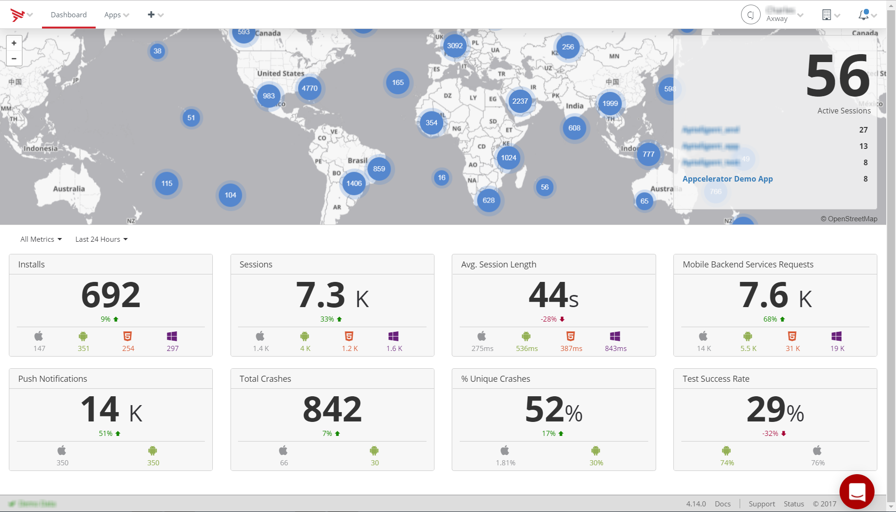

Appcelerator Dashboard
Introduction
Appcelerator Dashboard is a web application you use to manage all aspects of your AMPLIFY(TM) Appcelerator Services development. You can manage Titanium applications, as well as iOS and Android applications built with Objective-C (or Swift) and Java. It enables you to create, deliver, analyze and manage your mobile apps. On Dashboard you can do the following:
-
Manage client applications, including Android and iOS application
-
Register an Android or iOS application with the AMPLIFY Appcelerator Services (see Managing Non-Titanium Client Applications in Dashboard)
-
Download the AMPLIFY Appcelerator Services Services SDK and Appcelerator Studio
-
-
Manage organizations and application teams (see Managing Organizations)
-
View application metrics and analytics (see Application Details Screen: Analytics)
-
View key metric counts and trends
-
Track user engagement, retention and feature usage for your application
-
Create and monitor event "funnels" to monitor critical user flows
-
-
Monitor Cloud API usage for each application or for an organization as a whole (see Application Details Screen: Cloud)
-
Add, modify and delete Cloud objects for specific applications (see Managing Mobile Backend Services data objects)
-
Configure push notifications services (see Configuring Cloud Services)
-
View Arrow application statistics (see Viewing Custom Cloud Services)
-
-
Monitor application health, crashes and overall performance (see Application Details Screen: Performance)
-
Manage test cases (see Getting started with Test)
-
Create and run tests
-
View test results
-
Create and run automated tests using the Test service
-

Browser and Mobile OS Support
The Appcelerator Dashboard supports the following desktop browsers and mobile operating systems:
-
Chrome 24+
-
Firefox 18+
-
Safari 6+
-
Internet Explorer 9+
-
iOS 5+
-
Android 4+
If you try to open the Dashboard in an unsupported browser or if your browser width is too small, you will receive a warning message.
Next steps
To start using the Appcelerator Dashboard, please review Appcelerator Dashboard Getting Started.